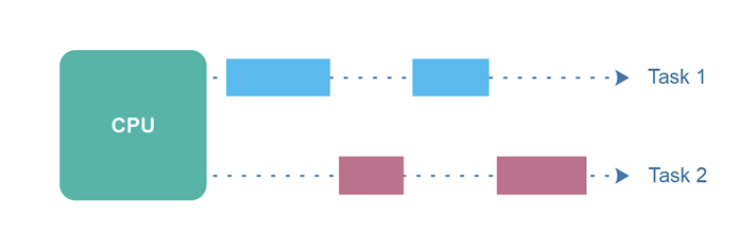
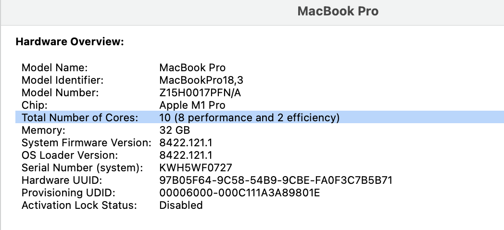
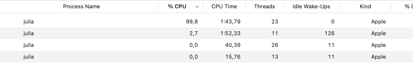
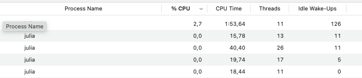
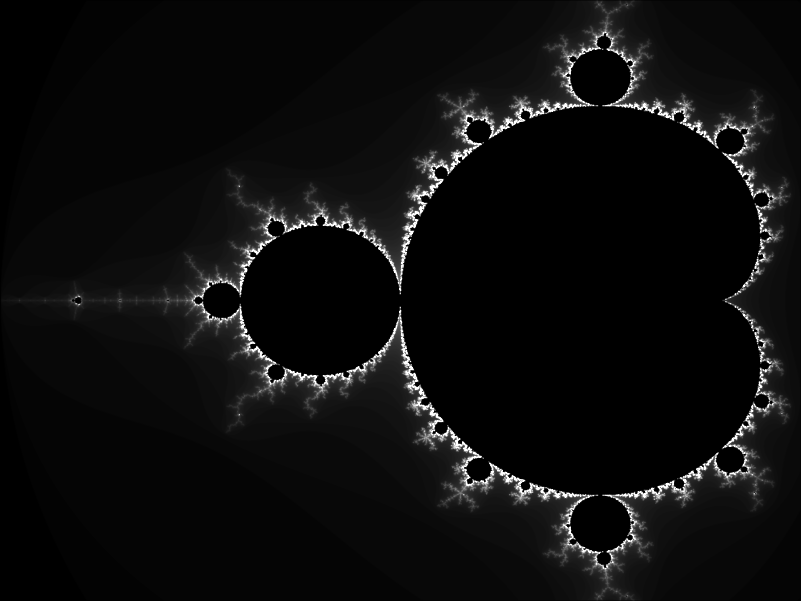

# make sure we only have a single thread
# this is default startup behaviour
Threads.nthreads()1M can split into N subtasks, which can be performed concurrently (at the same time), without interfering with each other, then in theory, the duration of the task should fall to M/N. In practice we almost never achieve this theoretical bound, because of time spent communicating between computational units and other system time.task: a unit of work to be executedthread: sequences of instructions that can be excuted by a CPU corecore: an individual processing unit within a CPU that can perform tasks independentlymachine: individual computer with own hardwarejuliaParadigms 1. and 2. live in a shared memory world, i.e. they operate within the same physical infrastructure: your computer has a CPU, and a block of RAM where data is stored for computation. You do not have to worry about your compute unit, one of your thread’s for example, not being able to access information in RAM.
Paradigms 3. and 4. are different, because they (can) rely on separate hardware. We can start a distributed julia process inside a single machine, but this will behave like another computer (almost), so you will have to worry about making data and functions accessible to all worker processes.
Even within a single thread there may be computational operations which can be performed next to each other. Coroutines split a single task into multiple chunks, and there is an efficient process which allows non-blocking execution. This may be beneficial in I/O operations or when we wait for something to arrive via a network. It is not beneficial if our operation involvs many CPU cycles (i.e. if it’s compute intensive). Let’s see an example.
Suppose we have this long running operation (waiting for a server to respond, or something else to arrive):
long_process (generic function with 1 method)Now let’s run that function three times.
9.005572291So this takes roughly 9 seconds, as expected.
Look at how we wrote the above program, pretty standard. We do one task after the other (nevermind that here it’s the same task three times - irrelevant). It’s how you think a computer works, no? 🤔 You think it does one thing after the other.
Well…that’s not always accurate. Check this out from the manual. You can think of a Task as a handle to a unit of computational work to be performed. It has a create-start-run-finish lifecycle. Tasks are created by calling the Task constructor on a 0-argument function to run, or using the @task macro:
that thing will sleep for 5 seconds and then print done. but why is nothing happening?
well, we just created the task, which is runnable. we havne’t run it yet! We run something by scheduling it to be run. Like this:
notice how the prompt returns so we can do other stuff in the meantime…and how we get a done after 5 seconds!
ok, back to our example:
9.006291167Now, check this out. Let’s write this as tasks that should get scheduled.
t1 = @elapsed begin
t1 = Task(long_process); schedule(t1)
t2 = Task(long_process); schedule(t2)
t3 = Task(long_process); schedule(t3)
(fetch(t1),
fetch(t2),
fetch(t3)) # fetch triggers execution
end3.009115🤯 3 seconds?! Keep in mind that
What happened?
The Task means that each job t1,t2,t3 was started as a separate unit of work. Not as we thought, that defining t2 on the line below t1 would by definition mean that one runs after the other. No, given those are Tasks means that the scheduler is free to allocate those chunks of work to whichever resources are currently free on your CPU. Here is a picture from the whitepaper:

You can see that julia makes it extremely easy to run concurrent tasks. Check out more in the manual: https://docs.julialang.org/en/v1/manual/parallel-computing/
First question you should ask: how many cores does my computer have?

Ok, next question: how to start julia with multiple threads?
# starting julia on the command line with the --threads flag
floswald@PTL11077 ~> julia --threads=4
julia> Threads.nthreads()
4
julia> alternatively you could set the environment variable JULIA_NUM_THREADS=4 or use the auto function to choose the best number.
floswald@PTL11077 ~> julia --threads=auto
julia> Threads.nthreads()
8Finally, in your VScode, you can edit the file settings.json (command palette and type settings.json) and add "julia.NumThreads": 4 - this will start the VSCode REPL with 4 threads each time, "julia.NumThreads": "auto" will set the flag to auto etc.
Alright, let’s do it finally.
using Base.Threads
julia> for i = 1:16
println("Hello from thread ", threadid())
end
Hello from thread 1
Hello from thread 1
Hello from thread 1
Hello from thread 1
Hello from thread 1
Hello from thread 1
Hello from thread 1
Hello from thread 1
Hello from thread 1
Hello from thread 1
Hello from thread 1
Hello from thread 1
Hello from thread 1
Hello from thread 1
Hello from thread 1
Hello from thread 1So far, so good. Let’s evaluate this loop now over our available threads. Easy with the @threads macro:
julia> @threads for i = 1:16
println("Hello from thread ", threadid())
end
Hello from thread 2
Hello from thread 4
Hello from thread 1
Hello from thread 1
Hello from thread 8
Hello from thread 2
Hello from thread 4
Hello from thread 3
Hello from thread 8
Hello from thread 6
Hello from thread 5
Hello from thread 3
Hello from thread 7
Hello from thread 6
Hello from thread 7
Hello from thread 5Or, to come back to the above example:
🤔 How could we prove that are executing something on multiple threads? Let’s use the @spawn macro to distribute a piece of code over available threads. Let’s make the task an infinite loop that runs for as long as the variable x is equal to 1. Check out how the prompt returns immediately.
julia> x = 1
1
julia> @spawn begin
while x == 1
# infinite loop
end
println("infinite loop done")
end
Task (runnable) @0x000000010dcdddc0
julia> Well, why, that inifinite loop is running on one of my 4 threads now:

until we kill it by saying

The difference between @threads and @spawn is that the former works well for balanced loops (same amount of work load for each iteration) while the latter works better for unbalanced workloads. Example, shamelessly stolen from Jeff Bezanon’s multithreading webinar - Let us compute the Mandelbrot set. The computations are very different at different iterations, hence the workload is super unbalanced. Some threads will have a ton of work, others, very little.
julia> """
mandelbrot set escape time algorithm
https://en.wikipedia.org/wiki/Plotting_algorithms_for_the_Mandelbrot_set
"""
function escapetime(z; maxiter = 80)
c = z
for n = 1:maxiter
if abs(z) > 2
return n-1
end
z = z^2 + c
end
return maxiter
end
escapetimeand here is a function that computes the whole set by using this function:
julia> function mandel(; width = 1600, height = 1200, maxiter = 500)
out = zeros(Int,height, width)
real = range(-2.0,0.5,length=width)
imag = range(-1.0,1.0, length=height)
for x in 1:width
for y in 1:height
z = real[x] + imag[y]*im
out[y,x] = escapetime(z,maxiter = maxiter)
end
end
return out
end
mandel (generic function with 1 method)Let’s run it in serial model, i.e. no multi-threading at all:
julia> # time it
m_serial = @elapsed m = mandel()
1.565549583
# plot it
img = Gray.((m .% 500) ./ 100)
alright, time to parallelize this over our threads.
let’s try and parallelize this now.
julia> function mandel_outer_thread(; width = 1600, height = 1200, maxiter = 500)
out = zeros(Int,height, width)
real = range(-2.0,0.5,length=width)
imag = range(-1.0,1.0, length=height)
# we parellize over the x direction
@threads for x in 1:width
for y in 1:height
z = real[x] + imag[y]*im
out[y,x] = escapetime(z,maxiter = maxiter)
end
end
return out
end
mandel_outer_thread (generic function with 1 method)
julia> m_thread = @elapsed mandel_outer_thread();
julia> m_serial / m_thread
3.3293004734319482ok, about a 3x speedup. For 8 threads! That’s far from linear scaling. problem here is how the julia scheduler assigns jobs to threads in this loop. by default it gives the same number of jobs to each thread. But in this example you see that some iterations are much more labor intensive than others. So that’s not great.
Let’s split the work along the columns of the out matrix and lets use @spawn, which will assign tasks to threads as they become available
julia> function mandel_spawn(; width = 1600, height = 1200, maxiter = 500)
out = zeros(Int,height, width)
real = range(-2.0,0.5,length=width)
imag = range(-1.0,1.0, length=height)
# we want to wait in the end for all threads to finish
@sync for x in 1:width
# here we say 'distribute columns to free threads'
@spawn for y in 1:height
z = real[x] + imag[y]*im
out[y,x] = escapetime(z,maxiter = maxiter)
end
end
return out
end
mandel_spawn (generic function with 1 method)
julia> m_spawn = @elapsed mandel_spawn();
julia> m_serial / m_spawn
6.243123492042317Ok, that’s better!
In general, I have found multithreading to work well at a level of a workload of a few seconds. I.e. if you can choose at which level of a nested loop to put the @threads macro, the tradeoff between sending data across threads and taking advantage of parallelization for me seemed optimal if the that task takes a few seconds. That said, any such statements are very context specific, and getting good performance out of threaded models takes a good amount of experimentation, in my experience.
x = [1,2,3]
lck = Threads.SpinLock()
Threads.@threads for i in 1:100
position = i % 3 + 1
lock(lck) do
x[position] += 1
end
endjulia> function sum_single(a)
s = 0
for i in a
s += i
end
s
end
sum_single (generic function with 1 method)
julia> sum_single(1:1_000_000)
500000500000
julia> function sum_multi_bad(a)
s = 0
Threads.@threads for i in a
s += i
end
s
end
sum_multi_bad (generic function with 1 method)
julia> sum_multi_bad(1:1_000_000)
70140554652That’s clearly wrong, and worse yet, it will be wrong in a different way each time you run it (because thread availability changes). We could instead assign chunks of work to each thread and the collect in the end:
julia> function sum_multi_good(a)
chunks = Iterators.partition(a, length(a) ÷ Threads.nthreads())
tasks = map(chunks) do chunk
Threads.@spawn sum_single(chunk)
end
chunk_sums = fetch.(tasks)
return sum_single(chunk_sums)
end
sum_multi_good (generic function with 1 method)
julia> sum_multi_good(1:1_000_000)
500000500000In this research project - [private repo] we encountered a situation very similar to the above.
The manual is again very helpful here.
Let’s start a new julia session now, without multithreading, but with multiple processes.
floswald@PTL11077 ~> julia -p 2 (base)
# -p implicitly loads the `Distributed` module
julia> nprocs()
3
julia> workers()
2-element Vector{Int64}:
2
3So, by default we have process number 1 (which is the one where we type stuff into the REPL, i.e. where we interact). Then, we said -p 2 meaning add 2 processes, that is why workers() shows ids 2 and 3.
Distributed programming in Julia is built on two primitives: remote references and remote calls. A remote reference is an object that can be used from any process to refer to an object stored on a particular process. A remote call is a request by one process to call a certain function on certain arguments on another (possibly the same) process.
In the manual you can see a low level API which allows you to directly call a function on a remote worker, but that’s most of the time not what you want. We’ll concentrate on the higher-level API here. One big issue here is:
We must ensure that the code we want to execute is available on the process that runs the computation. That sounds fairly obvious. But now try to do this. First we define a new function on the REPL, and we call it on the master, as usual:
julia> function new_rand(dims...)
return 3 * rand(dims...)
end
new_rand (generic function with 1 method)
julia> new_rand(2,2)
2×2 Matrix{Float64}:
0.407347 2.23388
1.29914 0.985813Now, we want to spawn running of that function on any available process, and we immediately fetch it to trigger execution:
julia> fetch(@spawnat :any new_rand(2,2))
ERROR: On worker 3:
UndefVarError: `#new_rand` not defined
Stacktrace:It seems that worker 3, where the job was sent with @spawnat, does not know about our function new_rand. 🧐
Probably the best approach to this is to define your functions inside a module, as we already discussed. This way, you will find it easy to share code and data across worker processes. Let’s define this module in a file in the current directory. let’s call it DummyModule.jl:
module DummyModule
export MyType, new_rand
mutable struct MyType
a::Int
end
function new_rand(dims...)
return 3 * rand(dims...)
end
println("loaded") # just to check
endRestart julia with -p 2. Now, to load this module an all processes, we use the @everywhere macro. In short, we have this situation:
floswald@PTL11077 ~/compecon> ls
DummyModule.jl
floswald@PTL11077 ~/compecon> julia -p 2
julia> @everywhere include("DummyModule.jl")
loaded # message from process 1
From worker 2: loaded # message from process 2
From worker 3: loaded # message from process 3
julia> Now in order to use the code, we need to bring it into scope with using. Here is the master process:
julia> using .DummyModule # . for locally defined package
julia> MyType(9)
MyType(9)
julia> fetch(@spawnat 2 MyType(9))
ERROR: On worker 2:
UndefVarError: `MyType` not defined
Stacktrace:
julia> fetch(@spawnat 2 DummyModule.MyType(7))
Main.DummyModule.MyType(7)Also, we can execute a function on a worker. Notice, remotecall_fetch is like fetch(remotecall(...)), but more efficient:
I would recommend
module you load on the workers, such that each of them has access to all required data. This may not be feasible if you require huge amounts of input data.Suppose we have the following structure on an HPC cluster.
floswald@PTL11077 ~/.j/d/LandUse (rev2)> tree -L 1
.
├── Manifest.toml
├── Project.toml
├── slurm_runner.run
├── run.jl
├── src
├── testwith this content for the file run.jl:
using Distributed
println("some welcome message from master")
# add 10 processes from running master
# notice that we start them in the same project environment!
addprocs(10, exeflags = "--project=.")
# make sure all packages are available everywhere
@everywhere using Pkg
@everywhere Pkg.instantiate()
# load code for our application
@everywhere using LandUse
LandUse.bigtask(some_arg1 = 10, some_arg2 = 4)The corresponding submit script for the HPC scheduler (SLURM in this case) would then just call this file:
The best alternative out there IMHO is juliahub. Instead of run.jl, you’d have this instead:
using Distributed
using JSON3
using CSV
using DelimitedFiles
@everywhere using bk
results = bk.bigjob() # runs a parallel map over workers with `pmap` or similar.
# bigjob writes plots and other stuff to path_results
# oputput path
path_results = "$(@__DIR__)/outputs"
mkpath(path_results)
ENV["RESULTS_FILE"] = path_results
# write text results to JSON (numbers etc)
open("results.json", "w") do io
JSON3.pretty(io, results)
end
ENV["RESULTS"] = JSON3.write(results)This is most relevant use case in most of our applications. tbc.
© Florian Oswald, 2025